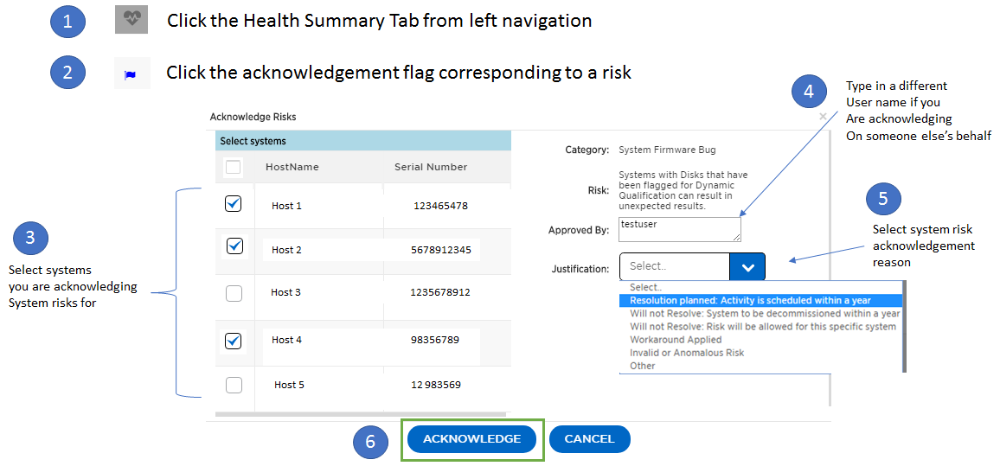

Contributors
The Health tab contains system risks that identifies configuration or other kinds of issues that may impair system performance, availability, and resilience. Each risk entry contains information about the specific risk, the potential negative impact, and links to mitigation plans for that risk. Addressing these risks proactively can improve your NetApp storage availability.
Impact Level Definitions:
-
High – High potential of a system outage or data corruption, address immediately. Examples include HA Takeover Impossible and Shutdown Pending.
-
Medium – May cause system downtime such as a panic. Address as soon as possible.
-
Low – Minimal impact but should be addressed for increased system stability. Examples include bypass disks present, SnapMirror sync failure, and RSDT not working.
-
Best Practice – Recommendation defined by a Technical Report (TR) or Knowledge Base (KB) article.
Case Probability analyzes risk data and technical support case data from the last two to three years. Using machine learning determines the likelihood that a technical support case will be opened for the system within 90 days of the risk being detected. This results in determining strong correlation between the first discovery of a risk and whether a case is opened.
Using the risk’s impact level and the risk to case confidence value to compute a “Case Probability” score. This score is used to rank the risks present on a system for which risk should be mitigated first.
Security Vulnerability
The Security Vulnerability tab identifies systems with security risks. This tab contains information about the specific risk, the potential negative impact and link to the CVE bulletin.
Impact Level Definitions for Security Risks
The Impact level for Security Risks is based on the Common Vulnerability Scoring System (CVSS) and noted in the Impact section of the CVE bulletin. The CVSS provides an open framework for communicating the characteristics and impacts of IT vulnerabilities. Its quantitative model ensures repeatable accurate measurement while enabling users to see the underlying vulnerability characteristics that were used to generate the scores. Thus, CVSS is well suited as a standard measurement system for industries, organizations, and governments that need accurate and consistent vulnerability impact scores. For more information, please visit https://nvd.nist.gov/vuln-metrics/cvss
TIP: If you would like to receive system risk report on a regular basis, click Schedule a Risk Report.
Proactive Remediation
The Proactive Remediation tab lists notification of systemic quality risks that are of high impact and may impair system performance, availability, and resiliency. Each risk entry contains information about the specific risk, systems impacted, and link to remediation recommendations. Risk notifications will be moved to the Acknowledge System Health tab post acknowledgement. Addressing these risks proactively at the onset can improve your storage availability. Systemic quality risks that are of high impact and have a high rate of occurrence resulting in potential node or cluster outage or data corruption must be addressed immediately.
Best Practices
Best practices are available from the Health Summary tab in the left navigation pane and the Fitness quadrant of the Fitness Dashboard. Gaps in best practices are highlighted, and corrective actions are listed for mitigation. Best practices are available at both the system and aggregate levels (customer, site, and group), helping you to standardize your storage environment and enhance its operational efficiency.
TIP: Review Best Practices for checking whether you have implemented Storage Efficiency Best Practices according to NetApp recommendations.
Health Trending
It is extremely important to mitigate risks in a timely manner to prevent critical issues. The Health Trending feature provides up to a 3-month view of System Risks, Best Practices, and End of Support so that as you mitigate these conditions, you can track the progress with weekly reports. These reports show you a summary of trends and enable you to drill down and analyze individual risks. Trending is available at both single system and customer level. You can download these reports in a PDF format.
System Risk Acknowledgement
Use the System Risk Acknowledgement feature to gain the greatest flexibility in managing how risks detected across your systems are displayed on your dashboard. This feature enables you to customize your risk dashboard so that it displays only the risks you deem to be most critical to your environment.
Acknowledging a risk is a way of flagging it in your dashboard. Setting your preferences to “Hide Acknowledged Risks” removes the flagged risks from your active default Health Summary view. All acknowledged risks are still viewable from the “Acknowledged System Health” tab.
Best Practice: Complete the “justification” field when you acknowledge a risk to document the rationale behind the acknowledgement.
| If you are a NetApp Internal user acknowledging on behalf of a customer with their approval, please add the customer’s name in the “Approved By” field for future reference and trackability. |

Risk Advisor
By using Risk Advisor, users can see how many risks can be mitigated just by doing an ONTAP upgrade. Only systems that can be upgraded to ONTAP 9.x will be shown.
Community Wisdom
Based on other systems with the same risk that upgraded, Community Wisdom gives the likelihood of the risk being mitigated by upgrading ONTAP along with a level of confidence. This is presented in the last two columns as “Risk present after upgrade” and “% of Risk resolved after ONTAP upgrade” column.
Benefits
-
Better system availability by lowering risk profile
-
Reduces planning time for upgrades – you know which systems will benefit from upgrade from a single report
-
Additional benefit of newer features in ONTAP 9
-
Your risk mitigation improves the confidence level of our recommendations